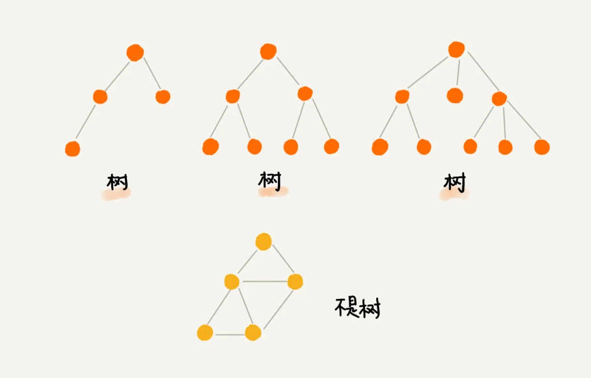
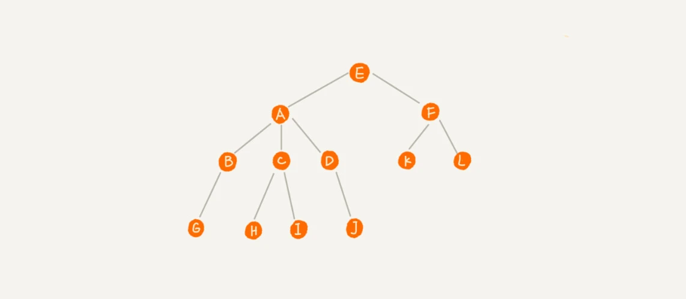
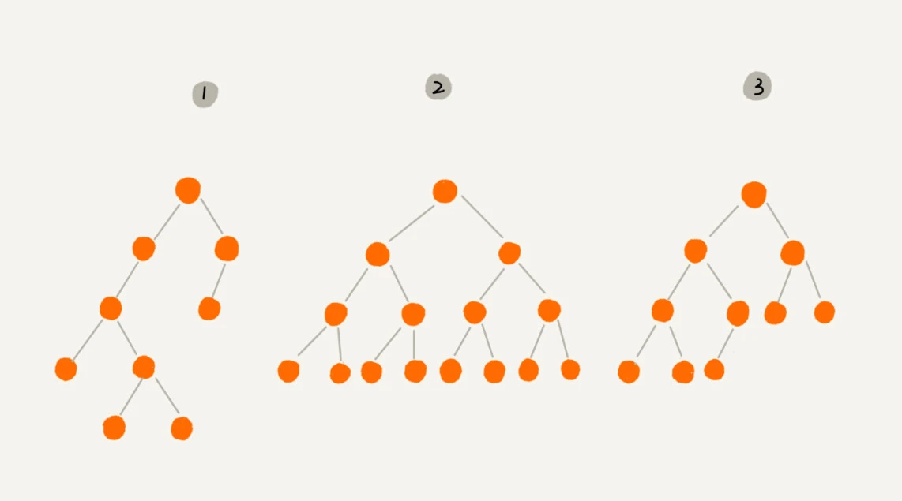
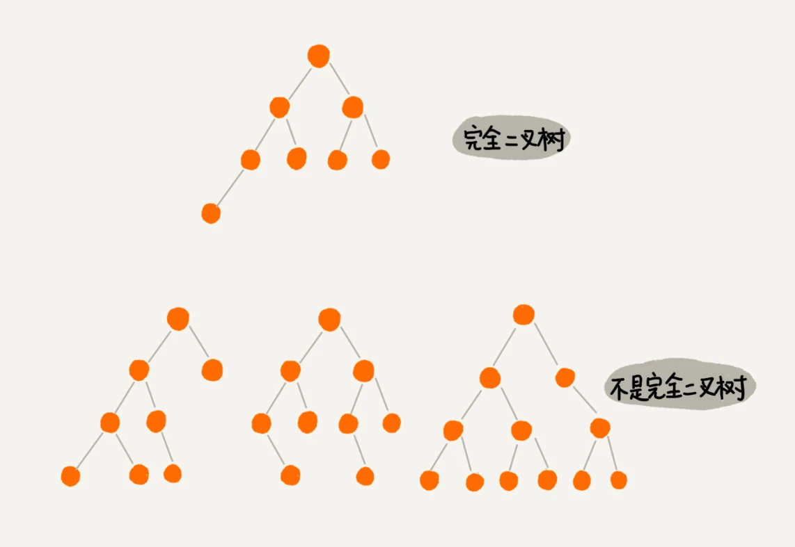
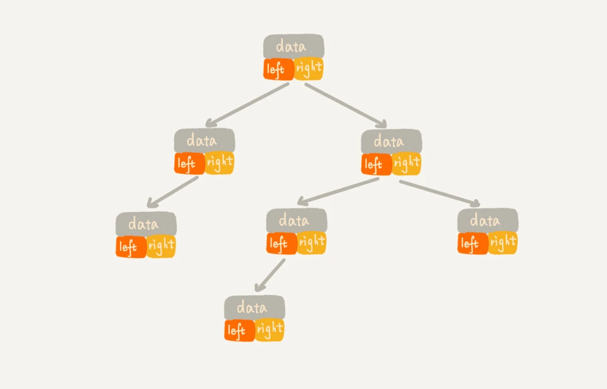
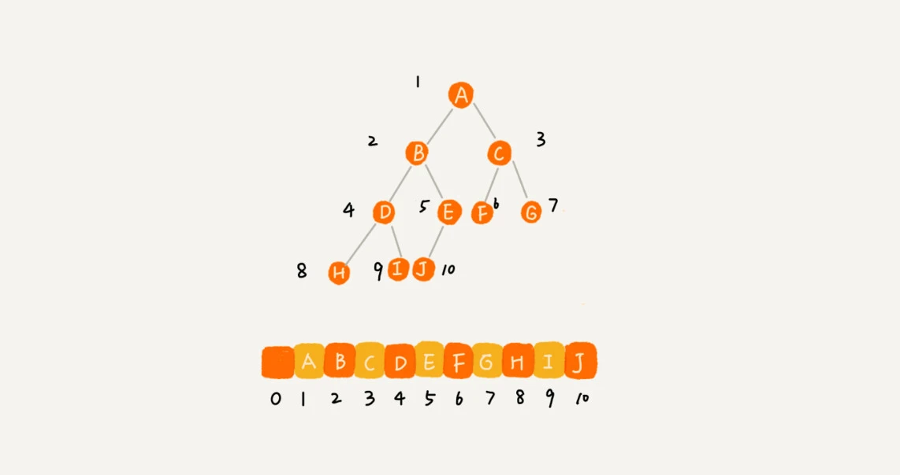
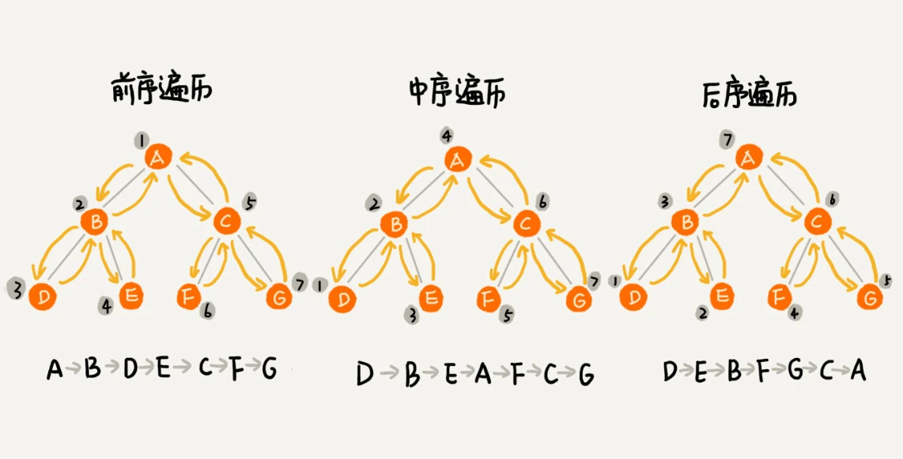

今天来学二叉树（上）。
前面学习的都是线性表结构，栈、队列等等。而树是一种非线性表结构。
树（Tree）
什么是“树”？直接看图。

接下来再看一张图，来说明什么是父节点、子节点、兄弟节点、根节点、叶子节点。

A节点是B节点的父节点，B节点是A节点的子节点。节点B、C、D这三个节点的父节点是同一节点，因此互相为兄弟节点。节点E没有父节点，被称为根节点。节点G、H、I、J没有子节点被称为叶子节点。
除此之外，还有三个概念：高度、深度、层。
节点的高度=节点到叶子节点的最长路径（边数）
节点的深度=根节点到这个节点所经历的边的个数
节点的层数=节点的深度+1
树的高度=根节点的高度
举例说明，如图所示。

记这三个概念的一个小窍门，就是类比“高度”“深度”“层”这几个名次在生活中的含义。
高度，其实是从下往上开始度量，即从最底层开始计数，并且计数的起点是0。
深度，其实是从上往下开始度量。即从根节点开始度量，并且计数起点也是0。
层数，跟深度的计算类似，不过，技术起点是1，也就是说根节点位于第1层。
二叉树
二叉树，顾名思义，每个节点最多有两个“叉”，也就是两个子节点，分别是左子节点和右子节点，不过二叉树并不要求每个节点都有两个子节点，有的节点只有左子节点，有的节点只有右子节点。

其中，编号2的二叉树中，叶子节点全都在最底层，除了叶子节点之外，每个节点都有左右两个子节点，这种二叉树就叫做满二叉树。
编号3的二叉树中，叶子节点都在最底下两层，最后一层的叶子节点都靠左排列，并且除了最后一层，其他层的节点个数都要达到最大，这种二叉树叫做完全二叉树。
下面是完全二叉树和非完全二叉树的例子。

为什么要学习完全二叉树，首先需要了解如何表示（或者存储）一颗二叉树？
存储一颗二叉树，有两种方法，一种是基于指针或者引用的二叉链式存储法，一种是基于数组的顺序存储法。
首先来看链式存储法。每个节点有三个字段，，其中一个存储数据，另外两个是指向左右子节点的指针。只要找到根节点，就可以通过左右子节点的指针，把整棵树都串起来。这种存储方式比较常用，大部分二叉树代码都是通过这种结构来实现的。

接下来再看，基于数组的顺序存储法。把根节点存储在下标i=1的位置，那左子节点存储在下标2*i=2的位置，右子节点存储在 2*i+1=3的位置。以此类推，B节点的左子节点存储在2*i=2*2=4的位置，右子节点存储在2*i+1=2*2+1=5的位置。

总结一下，如果节点X存储在数组中下标为i的位置，下标为2*i的位置存储的就是左子节点，下标为2*i+1的位置存储的就是右子节点。反过来，下标为i/2的位置存储的就是它的父节点。通过这种方式，只要知道根节点存储的位置（一般情况下，为了方便计算子节点，根节点会存储在下标为1的位置），这样就可以通过下标计算，把整棵树都串起来。
完全二叉树，仅仅“浪费”了一个下标为0的存储位置。如果是非完全二叉树，其实会浪费比较多的数组存储空间。所以，如果某树是一棵完全二叉树，用数组无疑是最节省内存的一种方式。因为数组的存储方式并不需要像链式存储法那样，要存储额外的左右子节点的指针。这也是为什么完全二叉树会单独拎出来的原因，也是为什么完全二叉树要求最后一层的子节点都靠左的原因。
堆其实就是一种完全二叉树，最常用的存储方式就是数组。
二叉树的遍历
经典的方法有三种，前序遍历、中序遍历和后序遍历。前序、中序和后序这个“序”指的是节点本身的顺序。
- 前序遍历是指，对于树中的任意节点来说，先打印这个节点，然后再打印它的左子树，最后打印它的右子树。
- 中序遍历是指，对于树中的任意节点来说，先打印它的左子树，然后再打印它本身，最后打印它的右子树。
- 后序遍历是指，对于树中的任意节点来说，先打印它的左子树，然后再打印它的右子树，最后打印它本身。

前序遍历
1 |